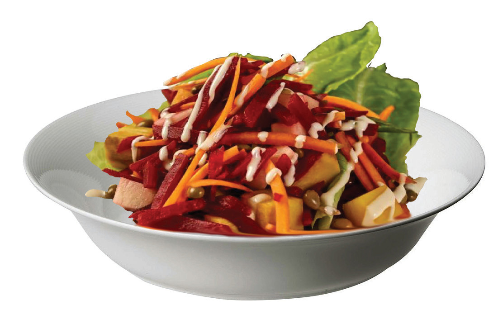

Mixed-cooked vegetable salad
Ingredients (serve 2 people)
1 small beetroot1 bunch of salad leaves1 carrot5g Mayonnaise1 potato50 g peas1 g salt
Method
- 1. Wash the vegetables and cut them into the desired shape, except the peas
- 2. Boil peas, carrot, potato and beetroot separately
- 3. Mix all the boiled vegetables and then add salt
- 4. Wash and dry salad leaves and arrange them on a plate.
- 5. Place the mixed cooked vegetables over the salad leaves, add mayonnaise and serve. Figure 4.25 shows mixed cooked vegetable salad.


Activity 4.15
Preparation of mixed cooked vegetable salad
Prepare mixed-cooked vegetable salad by following the appropriate method.
How can you retain nutrients when making this type of salad?
82